dbinom(4, 10, 0.3)[1] 0.2001209ESTAT0078 – Inferência I
Prof. Dr. Sadraque E. F. Lucena
sadraquelucena@academico.ufs.br
http://sadraquelucena.github.io/inferencia1
Grupo no WhatsApp: http://tiny.cc/inf1wpp
Introduzir fundamentos da inferência estatística;
Desenvolver habilidades de análise e interpretação de estimadores;
Compreender a aplicabilidade da inferência na análise de dados.
Amostras e distribuições amostrais.
Estimação pontual e por intervalo.
Estudo de estimadores mais comumente usados: método dos momentos, máxima verossimilhança, estimador de Bayes.
Intervalos de confiança; métodos para construção de intervalos de confiança.
Parte 1. Princípios da Estimação Pontual
1.1. Conceitos Iniciais: Parâmetros, Estimador e Estatística
1.2. Distribuição amostral de algumas estatísticas
1.3. Propriedades dos estimadores:
1.3.1. Estimador não viesado
1.3.2. Viés e Erro quadrático Médio
1.3.3. Eficiência de um Estimador
1.4. Estatística Suficiente
Parte 2. Métodos de Estimação
2.1. Família Exponencial
2.2. O Método da Máxima Verossimilhança
2.3. Propriedades dos Estimadores de Máxima Verossimilhança
2.4. Família Exponencial e o Método da Máxima Verossimilhança
2.5. O Método dos Momentos
2.6. Introdução ao estimador de Bayes
Parte 3. Estimação por intervalo
3.1. Resultados de amostras de população normal
3.2. Método da Quantidade Pivotal
3.3. Intervalos de confiança para populações normais para:
3.3.1. Uma amostra
3.3.2. Duas amostras
3.4. Intervalos de confiança aproximados
Avaliações (previsão):
Não haverá aula:
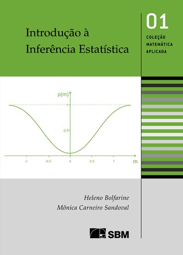
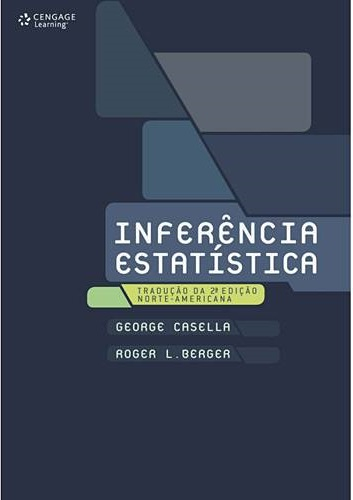
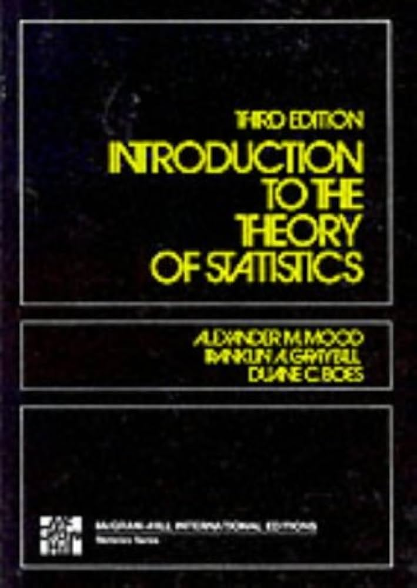
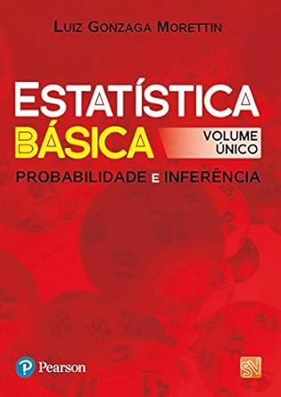
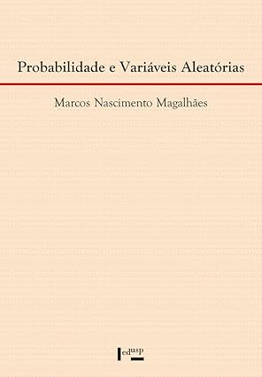
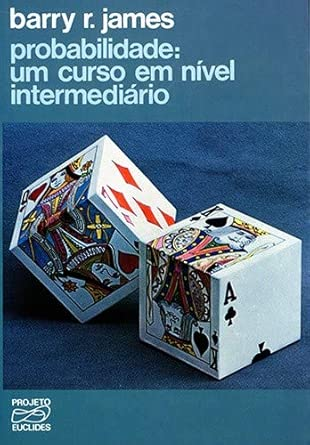
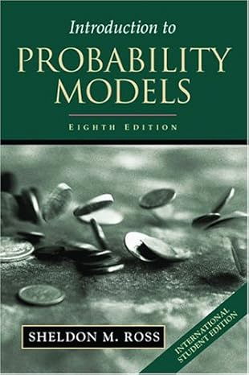
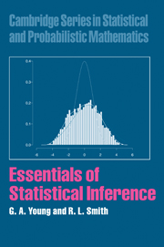
Considere \(X\sim\) Binomial(\(n,p\)). Para calcular:
dbinom(x, n, p).pbinom(x, n, p).rbinom(r, n, p).Seja \(X\sim\) Binomial(\(n=10; p=0,\!3\)).
Cálculo no R:
\(E(X)\color{blue}{= 10\cdot 0,\!3=3}\)
\(Var(X)\color{blue}{= 10\cdot 0,\!3(1-0,\!3)= 2,\!1}\)
Gráfico de \(X\sim\) Binomial(\(n=10; p=0,\!3\)):
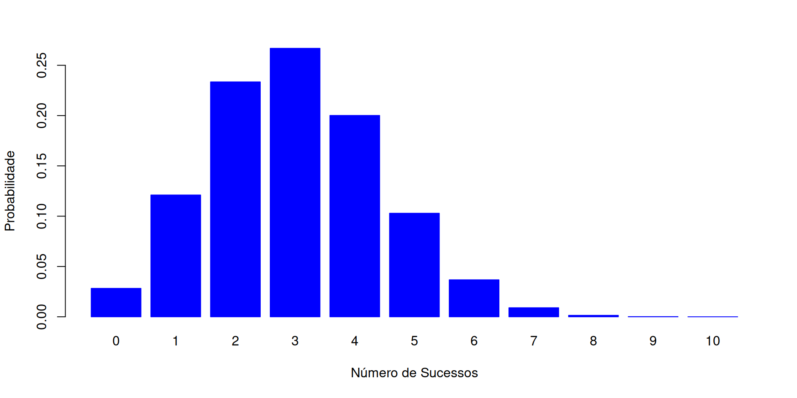Considere \(X\sim\) Poisson(\(\lambda\)). Para calcular:
dpois(x, lambda).pbinom(x, lambda).rpois(r, lambda).Seja \(X\sim\) Poisson(\(\lambda=6\)).
Cálculo no R:
Gráfico da distibuição de \(X\sim\) Poisson(\(\lambda=6\)):
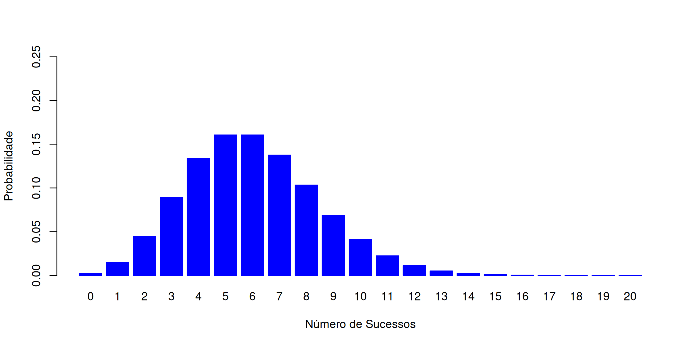Considere \(X\sim\) Uniforme(\(a, b\)). Para calcular:
punif(x, min=a, max=b).runif(r, min=a, max=b).Seja \(X\sim\) Uniforme(\(a=1, b=7\)).
Cálculo no R:
Gráfico da distibuição de \(X\sim\) Uniforme(\(a=1, b=7\)):
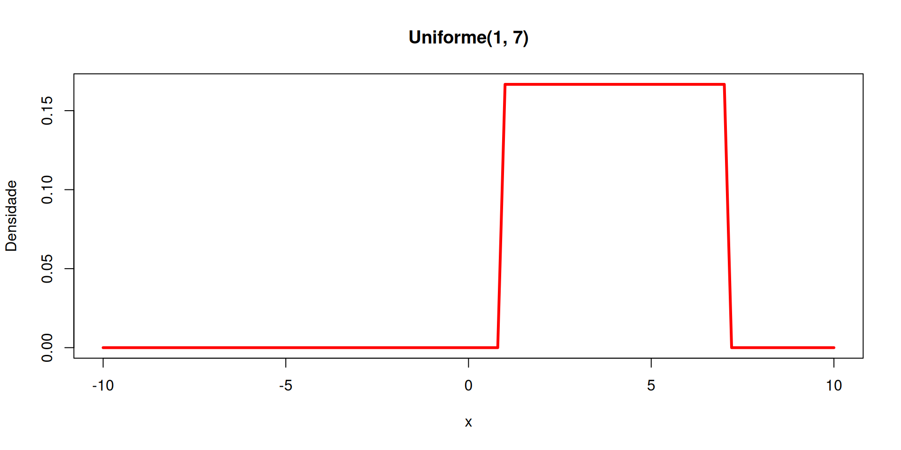Considere \(X\sim\) Normal(\(\mu, \sigma^2\)). Para calcular:
pnorm(x, mean=\(\color{slateblue}{\mu}\), sd=\(\color{slateblue}{\sigma}\)).rnorm(r, mean=\(\color{slateblue}{\mu}\), sd=\(\color{slateblue}{\sigma}\)).Seja \(X\sim\) Normal(\(\mu=0, \sigma^2=4\)).
Cálculo no R:
Gráfico da distibuição de \(X\sim\) Normal(\(\mu=0, \sigma^2=4\)):
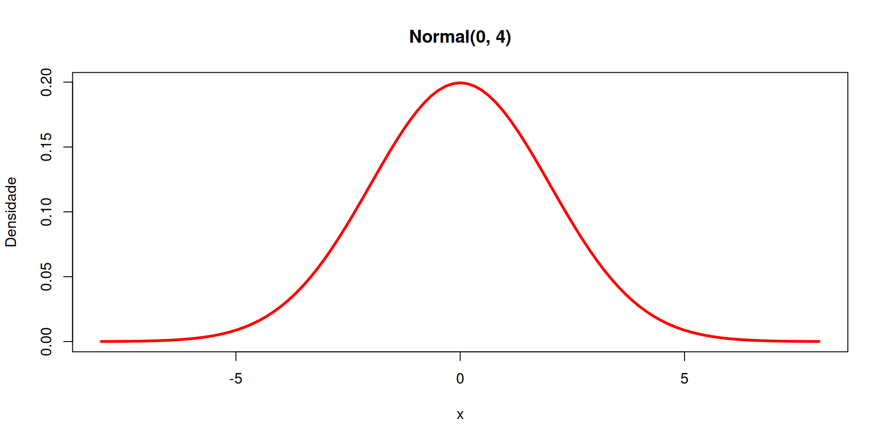Considere \(X\sim\) Exponencial(\(\alpha\)). Para calcular:
pexp(x, rate=\(\color{slateblue}{\alpha}\)).rexp(r, rate=\(\color{slateblue}{\alpha}\)).Seja \(X\sim\) Exponencial(\(\alpha=2\)).
Cálculo no R:
Gráfico da distibuição de \(X\sim\) Exponencial(\(\alpha=2\)):
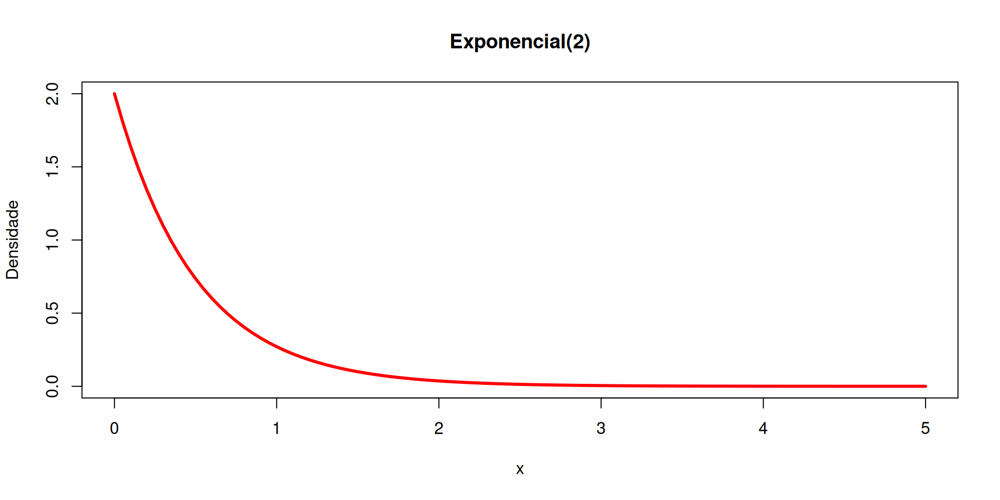